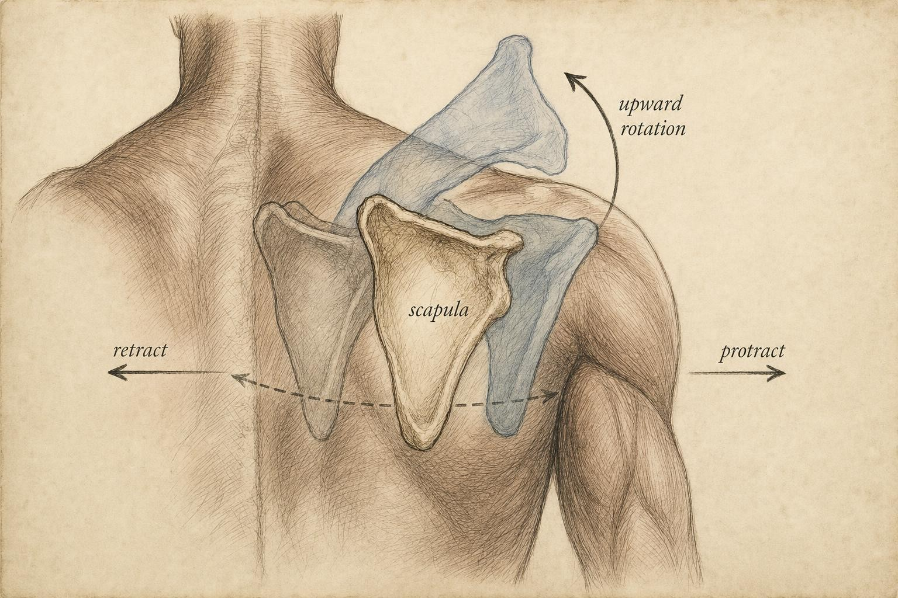
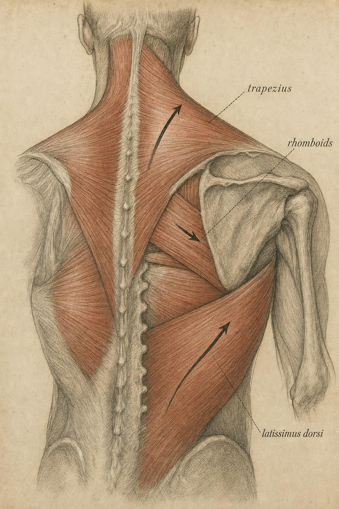

Pulling, the Back, and the Traveling Scapula
Why the shoulder blade, not the arm, is the star of every row and pull-up.
Press your fingertips flat against the back of a partner's shoulder blade and ask them to reach slowly overhead. You will feel a bone that refuses to sit still. It slides outward and upward, tilts backward, and rotates like the hand of a clock, all without a single rigid joint to command it. The scapula is suspended on the ribcage by muscle alone, a floating platform that has no bony socket to lock into. Everything the back does in a pull is filtered through where this platform happens to be at that instant.
In the chapter on pressing, the scapula was a supporting player, a base a learner stabilized so the arm could deliver force outward. In pulling it takes the lead role. The row and the pull-up are only partly about the arm bending; they are largely about the shoulder blade gliding, rotating, and anchoring so that the large muscles hanging off it can pull with real leverage. Read the pull as an arm alone and you will misplace where it is hard, why it is hard, and which muscles can even contribute at a given moment. Read it as a scapula-plus-arm system and the whole pattern comes into focus.
Follow one learner's confusion through this chapter to see why the distinction matters in practice, not just in theory. Hendrix is a 34-year-old learner who began rowing on a cable machine three months ago and recently added pull-ups to his week. Two pieces of gym folklore had shaped everything he did. The first, repeated by nearly every video he watched about rows, was to squeeze the shoulder blades together as hard as possible on every repetition. The second, offered when he complained that pull-ups felt "stuck" a few inches from the top, was that he simply needed more arm strength, more biceps work, more grip training. Neither piece of advice was reasoned from where his scapula actually was during the lift, and neither, as we will see, was quite right. Hendrix is not a patient in this course and he is not a case to be diagnosed. He is a working example of what happens when a lifter tries to fix a leverage problem with an effort problem, and by the end of this chapter you will be able to read his situation more precisely than the forum that coached him.
A bone with no home: the scapula as a moving platform
Begin with the mechanical oddity that makes this whole chapter necessary. The glenohumeral joint, the ball-and-socket joint of the shoulder, is a genuine articulation with cartilage, a capsule, and a labrum holding the humeral head against the shallow glenoid fossa. The scapulothoracic joint is not a joint at all in that anatomical sense. It is a muscular suspension: the scapula rides on a cushion of soft tissue over the curve of the ribcage, held in place and steered entirely by the muscles that attach to it. There is no bony stop, no ligament locking it to a fixed point, and no cartilage surface constraining how far it can glide. This absence of a hard limit is exactly what makes the shoulder complex the most mobile joint system in the human body, and it is also what makes it the most coordination-dependent. Mobility purchased without a bony constraint has to be paid for somewhere, and the payment is that the platform must be actively managed by muscle, every second, rather than simply held in place by bone.
The consequence for pulling mechanics is direct and worth sitting with. Nearly every muscle a learner cares about in a pull attaches to the scapula at one end: the trapezius, the rhomboids, the teres major, and, in part, the latissimus dorsi and the deltoid. When the platform moves, the origin of those muscles moves with it. And when a muscle's origin moves, so does its line of pull, the straight-line path the muscle's force follows from origin to insertion, and so does its moment arm, the perpendicular distance from a joint's axis to that line of pull. These are the two quantities this course has trained a learner to track since the chapter on torque, and in pulling they are never static. A muscle that is beautifully positioned to depress the arm when the scapula sits in one place may be slack, mistimed, or pulling at a nearly useless angle once the scapula shifts even a few degrees.
So the platform's position is not cosmetic, and it is not a detail reserved for a physical therapy clinic. It continuously rewrites the leverage available to the entire pulling system, repeatedly, within a single repetition. This is why an entire chapter is devoted to a bone rather than to "the back" as an undifferentiated mass. The single most important idea to carry forward from this section is a simple one: the scapula changes the mechanics, moment by moment, of every muscle attached to it, and a lifter who ignores where the platform sits is trying to reason about leverage while the origin points keep moving underneath the calculation.

It helps to name the vocabulary a learner will need for the rest of the chapter, because these terms describe real, independent directions the scapula can travel. Protraction and retraction describe the scapula sliding away from the spine and back toward it. Elevation and depression describe it sliding up toward the ears and down toward the hips. Upward rotation and downward rotation describe the glenoid fossa, the socket itself, tipping to point more toward the ceiling or more toward the floor. A fourth pair, anterior and posterior tilt, describes the top of the scapula rocking forward or backward over the ribs, which matters most at the extremes of overhead reaching. None of these motions happens in isolation during a real lift. A pull-up recruits retraction, downward rotation, and depression all at once, in a coordinated sequence, and the muscles that produce each of those motions are not identical, which is precisely why the back cannot be trained or understood as a single lever.
One more wrinkle is worth flagging early, even though the course will not develop it fully until the chapter on anthropometry. The scapula's resting position, how far it naturally sits from the spine, how much it tips forward over the ribs at rest, is not identical from one learner to the next. It depends on the shape and curvature of an individual's ribcage, on the length and tension of the muscles crossing it at rest, and on habitual posture built up over years of sitting, working, and moving in particular ways. Two learners performing what looks like an identical pull-up can be starting that pull-up from two different scapular starting points, which means the same coaching cue can land very differently on two different bodies. This is not an excuse to abandon the mechanics. It is a reason to treat the mechanics as a framework for observing an individual body rather than as a single template to be imposed on every body in the room.
Scapulohumeral rhythm: the coordination that makes pulling possible
The classic description of how the platform cooperates with the arm comes from Inman and colleagues, whose mid-century observations of the shoulder in motion remain the reference point for shoulder biomechanics to this day (Inman et al., 1996, a reprint of the original 1944 study). They described scapulohumeral rhythm (SHR): during arm elevation, the total motion available at the shoulder complex is shared between the glenohumeral joint and the scapulothoracic complex in a roughly two-to-one ratio. For every three degrees the arm rises relative to the trunk, about two degrees come from the ball rotating in the socket and about one degree comes from the scapula rotating upward on the ribcage.
Why does this matter for a pull-up, where the arm is coming down against body weight rather than up against gravity alone? Because scapulohumeral rhythm runs in reverse just as reliably as it runs forward. As a learner hauls the chin toward a bar, the arm adducts and extends at the glenohumeral joint while the scapula must simultaneously rotate downward and retract to keep the socket oriented under the moving humeral head. If the scapula fails to participate, if it stays parked in an elevated, upwardly rotated position instead of following the arm down, the glenohumeral joint is forced toward the ends of its own range without the socket rotating to meet it. The rhythm is what keeps the joint surfaces congruent through the movement, and it is what keeps every muscle crossing the joint at a workable length and a useful angle rather than stretched thin or bunched short.
Crucially, scapulohumeral rhythm is not a fixed gear ratio stamped permanently into the anatomy. Pascoal and colleagues (2010) tracked three-dimensional scapular kinematics during loaded versus unloaded shoulder abduction in healthy subjects and found that adding external resistance increased scapular upward rotation and posterior tilt at 60 and 90 degrees of arm elevation compared with the same motion performed unloaded. In other words, the rhythm responds to load. The platform recruits more of its own motion when the mechanical demand on the system rises, rather than contributing a fixed share regardless of what is being lifted. This is a theme worth holding onto for the rest of the chapter: scapular behavior is not a passive default setting but an actively regulated response to the task at hand, which is also why coaching cues that freeze the scapula in one position for every load and every rep tend to fight the system's own design.
The back as a coordinated team, not a single muscle
"Working the back" is a phrase that hides more than it reveals, and it is worth retiring from a learner's working vocabulary entirely. The back that pulls is at minimum five functionally distinct actors with different lines of pull, different architecture, and different jobs, and their relative contributions shift depending on exactly where the platform sits at each instant of the lift.
Latissimus dorsi: the long-range prime mover
The latissimus dorsi is the workhorse of shoulder adduction and extension, the motion of bringing the upper arm down and back toward the trunk. It originates broadly across the lower spine, the thoracolumbar fascia, the iliac crest, and the lower ribs, and it converges into a single tendon that inserts on the front of the humerus, medial to the bicipital groove. It is enormous, and its architecture is that of a classic prime mover: a large physiological cross-sectional area and fibers arranged to shorten over a long excursion and produce force through a wide arc of motion. Hik and Ackland's (2018) systematic review of the moment arms of the muscles spanning the glenohumeral joint found the latissimus dorsi and teres major to have among the largest shoulder adduction and depression moment arms of the muscles they surveyed, larger than the deltoid or the rotator cuff group in those actions. That is exactly the action a pull-up demands, pulling the humerus down and in toward the trunk against body weight, which is why electromyography (EMG) studies routinely find the latissimus dorsi operating at the very top of its available range during pulling exercises. Youdas and colleagues (2010) recorded latissimus dorsi activation of 117 to 130 percent of maximum voluntary isometric contraction (MVIC) during pull-ups and chin-ups, a figure that only makes sense once you know that MVIC is a reference contraction and dynamic, multi-joint exercise can genuinely exceed it. The muscle is not merely involved in a pull-up. It is running near its ceiling.
Teres major: the lat's quiet partner
Tucked beneath the latissimus dorsi and running from the lower, lateral border of the scapula to a spot on the humerus near the lat's own insertion, the teres major shares much of the lat's line of pull and its action of adduction, extension, and internal rotation. It is sometimes called the lat's little helper for exactly that reason. Hik and Ackland's (2018) review grouped it alongside the latissimus dorsi in reporting large adduction and depression moment arms, which is a useful reminder that a pull is rarely the product of one muscle acting alone. The teres major's origin is on the scapula itself rather than the spine, so unlike the lat, its leverage depends entirely on where the shoulder blade sits at the moment of the pull. Move the platform and you move one end of this muscle's line of pull directly, which is a preview of the coordination problem the rest of this chapter is built to explain.
Trapezius: the platform's steering system
The trapezius does not primarily move the arm at all. It moves and stabilizes the scapula, and it does so through three regions with genuinely different jobs. The upper fibers elevate the scapula and assist upward rotation; the middle fibers retract it, drawing it toward the spine; the lower fibers depress it and also contribute to upward rotation. Inman and colleagues (1996) modeled the upper and lower trapezius together with the serratus anterior as a force couple, a pair of opposing pulls that rotate the scapula without simply translating it sideways, in the same way that two hands placed on opposite sides of a steering wheel turn it smoothly rather than shoving it off to one side. When a learner sets the shoulder blades before a row, that learner is asking the trapezius force couple to fix the platform so that the latissimus dorsi and rhomboids can deliver force from a stable base rather than from a base that is itself sliding around.
Rhomboids: the retractors and downward rotators
The rhomboids, comprising the rhomboid major and rhomboid minor, run from the spinous processes of the lower cervical and upper thoracic vertebrae to the medial border of the scapula, and their line of pull is roughly medial and slightly upward. They retract the scapula and rotate it downward, which is precisely the scapular motion that accompanies the pulling-down phase of a pull-up and the finishing position of a row. Their postural role is continuous and low-grade rather than explosive; their line of pull is short and direct compared with the sweeping arc of the latissimus dorsi. This distinction, between a muscle built to move a joint through a wide arc and a muscle built to hold a joint steady against a smaller, more constant demand, is where the architecture principles introduced earlier in this course resurface with real consequences for how a learner should train and interpret each muscle's behavior.
Serratus anterior: the silent partner in the force couple
One more muscle deserves a place on this roster even though it rarely gets named in gym conversation. The serratus anterior wraps from the upper ribs along the side of the chest to the underside of the scapula's medial border, and its main job is to hold the scapula flat against the ribcage while also contributing to upward rotation and protraction. Inman and colleagues (1996) placed it directly alongside the upper and lower trapezius in the force couple that rotates the scapula upward during arm elevation, and Ludewig and Reynolds (2009) identified altered serratus anterior activation as one of the recurring findings across shoulder presentations involving scapular dyskinesis. A scapula that wings, meaning its medial border lifts visibly off the ribcage during a pull, is very often a scapula whose serratus anterior is not doing its share of that job. It rarely gets credit because it produces no dramatic visible motion of its own. Its entire contribution is keeping the platform flush against the ribs so that every other muscle on this list has a stable surface to pull from.

Postural muscles behave differently: the fiber-type refresher
Recall from the chapter on muscle architecture that muscles are specialized along two axes a learner can actually observe: fiber-type composition and architecture, meaning fiber length, pennation angle, and physiological cross-sectional area. Those ideas predict, with real precision, why the back's team members behave so differently under an identical external load.
The latissimus dorsi is built as a prime mover: long fibers, a large cross-section, and an arrangement organized to produce large excursions and high force through a wide arc of motion. It fatigues, it works well in bursts, and it operates comfortably near its activation ceiling, consistent with the 117 to 130 percent MVIC figures cited above. The scapular stabilizers, the deep fibers of the trapezius and the rhomboids, carry a very different, heavier postural burden. They are recruited more continuously to hold the platform against gravity and against the reaction forces of the prime movers pulling on it from the outside. Their job is often isometric: not to move the scapula through a dramatic excursion but to keep it from being dragged out of position while other, larger muscles do the visible work of the lift.
This is why "train your back" is an incomplete instruction, and why a learner who only chases a pump in the lat is training half the system. The prime mover wants heavy, arcing, loaded work across a full range of motion; the stabilizers are being challenged as much by the demand to hold position under load as by any shortening they perform themselves. A row that lets the shoulder blade drift forward under load, elevating and protracting as the weight gets heavy, has not worked the back in any unified sense. It has loaded the lat while letting the retractors quietly surrender their job. The team can be split apart by a lifter's technique, and the platform's position, moment by moment, is the thing that does the splitting.
Two lifts, two loading stories: the row versus the pull-up
Both a row and a pull-up work the back, and both push the latissimus dorsi toward the top of its activation range. Yet they load the system quite differently, and the difference lives in two places: the direction of the external load relative to the body, and the scapular motion each movement actually recruits to make the pull possible.
In a row, gravity pulls the load straight down while the torso is bent forward at some angle. The arm travels roughly horizontally relative to the trunk, so the movement emphasizes horizontal shoulder extension and, critically, scapular retraction. The rhomboids and middle trapezius are central here. They are the muscles that draw the shoulder blade back toward the spine as the elbow passes the ribs, working alongside the lat rather than instead of it. Fenwick, Brown, and McGill (2009) compared three common row variations, the inverted row, the standing bent-over row, and the standing one-armed cable row, and found that the inverted row produced the highest activation of the latissimus dorsi and the upper back musculature among the three, while the standing one-armed cable row placed a distinctly greater demand on the trunk's rotational, or torsional, control. The lesson generalizes well beyond these three specific exercises: changing the row's setup, whether by body angle, unilateral loading, or the direction the cable or bar travels, changes not just how heavy the lift feels but which structures are doing the stabilizing work and which are doing the pulling.
In a pull-up, the load is body weight and the arm starts overhead, so the movement is dominated by shoulder adduction and extension pulling the humerus down, exactly the lat-and-teres-major action that Hik and Ackland (2018) identified as having the largest moment arms among the muscles they surveyed. The scapula's job here is downward rotation and depression, and the muscle sequence that initiates it is telling. Youdas and colleagues (2010) found that pull-ups and chin-ups were begun by the lower trapezius and the pectoralis major firing first, with the biceps brachii and the latissimus dorsi completing the movement. The platform is set into motion before the prime mover delivers the bulk of its pull, a sequencing pattern that argues directly against Hendrix's forum advice to simply "pull harder with the arms" when a pull-up stalls. The same study found the pull-up produced significantly greater lower-trapezius activation than the chin-up, while the chin-up's supinated grip shifted meaningful work toward the pectoralis major and the biceps brachii.
Grip is a real mechanical lever here, not a cosmetic choice. Dickie and colleagues (2017) compared supinated, pronated, neutral, and rope grips during pull-up variations and found the pronated, or overhand, grip produced significantly greater middle-trapezius activation than the neutral grip, and that pull-ups in general elicited greater trapezius and latissimus dorsi activation than chin-ups performed with a supinated grip. The same study found that the concentric, pulling phase of each variation produced significantly greater activation of the brachioradialis, biceps brachii, and pectoralis major compared with the eccentric, lowering phase, a useful reminder that a single repetition is not mechanically uniform from bottom to top. The broader takeaway is not that one grip is superior in some absolute sense but that grip redistributes the load across the back's team by changing the forearm's rotation and, through the kinetic chain, the arm's line of pull and the scapular motion required to support it.
Where a pull is hardest: tracking the external moment arm
The course's central analytic move applies cleanly to pulling. A lift is hardest at the point where the external moment arm, the perpendicular distance from the joint to the load's line of action, is longest, because that is precisely where the load demands the most torque from the muscles crossing that joint. Find that point in the range of motion and a learner has found the sticking point.
In a bent-over row, the load hangs straight down under gravity. The external moment arm at the shoulder is the horizontal distance from the glenohumeral joint to the bar or handle. That distance is largest when the arm is fully extended and the load hangs far in front of the shoulder, which is the bottom of the row. As the bar is pulled toward the ribs, it moves back under the shoulder, the horizontal distance shrinks, and the torque demand falls accordingly. The row is therefore hardest at the bottom and eases as the scapula retracts and the arm shortens its reach. Change the torso angle and the entire demand curve changes with it: the more horizontal the torso, the more of the range keeps the load out in front of the shoulder, extending the region of high demand across a larger share of the lift. A learner who rows from a nearly upright torso and a learner who rows from a near-horizontal torso are, in a real mechanical sense, performing two different exercises even if both call it a row.
In a pull-up, the load is body weight acting downward through the body's center of mass. At the bottom, hanging with arms straight overhead, the upper arm is nearly vertical, close to the line of the load, so the shoulder's external moment arm is relatively short and much of the early demand lands on the elbow flexors and on the initial work of setting the scapula in motion. As a learner rises and the upper arm swings from overhead toward the side of the body, the humerus becomes progressively more horizontal, the perpendicular distance from the shoulder to the vertical body-weight line grows, and the shoulder's torque demand climbs. The pull-up tends to get harder as a learner ascends, peaking somewhere in the mid-to-upper range where the arm is farthest from vertical, which is the opposite temporal pattern from the row.
This is why the two lifts feel hard in noticeably different places, and why lifters describe them so differently in conversation: the row fights a learner off the floor of the movement, and the pull-up fights a learner near the top. Neither pattern is a statement about the muscles being weak at that point in the range. Both are statements about where the geometry stacks the external moment arm against the lifter.
Grip width feeds directly into this geometry. Prinold and Bull (2016) tracked three-dimensional scapular kinematics across three pull-up techniques, a standard pronated grip, a reverse supinated grip, and a wide pronated grip, and found significantly different scapular patterns across the three. The wide grip produced reduced scapular protraction and retraction range and placed the shoulder near 90 degrees of abduction with roughly 45 degrees of external rotation, a combination the authors associated with increased subacromial impingement risk. That finding is worth understanding mechanically rather than simply memorizing: a wider grip forces more of the movement into abduction and constrains how much the platform is free to travel, changing both the arm's line of pull and the amount of room the scapula has to rotate and follow it.
When the platform misbehaves: a mechanical signal, not a diagnosis
Because the shoulder complex is suspended by muscle and steered by coordination rather than by bone, it is uniquely sensitive to timing, not just to how strong the muscles are, but to whether the platform moves in the right sequence at the right moment relative to the arm. When that coordination degrades, clinicians describe scapular dyskinesis: an altered pattern of scapular position or motion during arm movement, visible to a trained eye as a shoulder blade that winges, hikes, or fails to rotate on schedule.
The literature treats this pattern seriously. Ludewig and Reynolds (2009) reviewed how normal scapular gliding, tilting, and rotating relate to the health of the glenohumeral joint, documenting altered serratus anterior and upper-trapezius activation patterns across a range of shoulder presentations. The 2013 consensus statement from a gathering of shoulder specialists known informally as the scapular summit (Kibler et al., 2013) concluded that scapular dyskinesis is present in a high proportion of shoulder problems and that impingement symptoms in particular are affected by how the scapula is behaving. Prinold and Bull's (2016) finding that a wide-grip pull-up drives the shoulder toward a position associated with increased impingement risk is the same story told from the loading side rather than the clinical side.
Here is where this course holds its lane firmly, because the two sides of that story are easy to blur together. The mechanical reading is legitimate: scapular position changes leverage, and poor scapular coordination changes that leverage for the worse. But pain, pinching, catching, or a shoulder that gives way during pulling are signs that warrant professional evaluation. They are not something to diagnose from a moment-arm diagram or to train straight through on the assumption that more volume will fix a coordination problem. Use the mechanics in this chapter to understand why the shoulder is so coordination-dependent in the first place, and let that understanding make a learner quicker to refer a concern to a qualified professional, not quicker to self-treat it. The value of reading a pull as a scapula-plus-arm system is that it tells a learner when the platform is doing something worth a professional's eyes.
The scapula is not merely a passive base but a dynamic link in the kinetic chain. Its position and motion establish the mechanical conditions under which every muscle spanning the shoulder must operate.
Synthesis of Inman et al. (1996) and Kibler et al. (2013)
Case study: Hendrix and the two pulls he was reading wrong
Run Hendrix's row through the reasoning in this chapter and the first problem becomes visible immediately. Squeezing the shoulder blades together before the elbow has moved drives the scapula into full retraction early, which is exactly the rhomboid-and-middle-trapezius job described earlier in this chapter, performed at a moment when the latissimus dorsi should still be doing the bulk of the pulling. Fenwick, Brown, and McGill (2009) found that different row setups shift the balance of work among the lat, the upper back, and the trunk's stabilizers, which is a direct demonstration that how the scapula is managed during a row, not just how heavy the weight is, decides which muscles actually get trained. Hendrix's maximal, early squeeze was not wrong because retraction is bad. It was wrong because it was timed to override the sequence the muscles are actually built to run, spending the rhomboids' and trapezius's effort on a job the lat should still be doing.
Now turn to the pull-up. Youdas and colleagues (2010) found that pull-ups are initiated by the lower trapezius and the pectoralis major, with the biceps brachii and latissimus dorsi completing the pull, and Prinold and Bull (2016) showed that grip width changes how much room the scapula has to rotate and retract as the arm ascends. Hendrix's sticking point, a few inches from the top, is exactly where the geometry in the previous section predicts the pull-up gets hardest, as the humerus swings toward horizontal and the shoulder's external moment arm grows. Adding biceps curls targets a muscle that plays a real but secondary role in this lift. It does nothing to address whether the scapula is rotating downward and retracting on schedule to keep the socket oriented under the humeral head as Hendrix nears the top. He had correctly identified that something was limiting him near the top of the range. He had incorrectly assumed the limit was arm strength rather than platform coordination.
Here is the part that matters most, and it is where the boundary discussed above does real work. Nothing in this reasoning tells us whether Hendrix has a genuine coordination deficit worth a professional's attention, an ordinary strength plateau that more practice will resolve on its own, or something else entirely. He has reported no pain, pinching, or catching, which is a meaningfully different situation than a learner who describes those signs. The correct move for Hendrix is not to abandon rows or pull-ups, and it is not to chase a diagnosis from a mechanics chapter. It is to slow the row down and let the elbow initiate the pull before the shoulder blades finish their job, and to notice, on the pull-up, whether allowing the scapula to rotate downward through the sticking point, rather than bracing against it, changes how the top of the movement feels. If discomfort, pinching, or a sense of the shoulder giving way ever appears during that experimentation, that is the moment to stop guessing and bring the specific symptom to a qualified clinician, because a mechanics course can explain why the platform matters and still have nothing useful to say about an individual body's specific complaint.
It is worth naming what Hendrix actually walks away with, because it is the real deliverable of this chapter. He does not leave with a diagnosis or a guaranteed fix. He leaves with a better question to ask of his own technique: where is my scapula right now, and is it doing the job this instant of the lift actually requires? That question travels with him to every row and every pull-up he will ever do, which is a sturdier outcome than any single cue could offer, because it does not depend on the next video he happens to watch.
Key Takeaways
- The scapula is suspended on the ribcage by muscle alone, a floating platform whose position continuously rewrites the line of pull and moment arm of every muscle attached to it.
- Scapulohumeral rhythm shares elevation between the glenohumeral joint and the scapula in a roughly two-to-one ratio, but the rhythm is load-responsive, not fixed (Inman et al., 1996; Pascoal et al., 2010).
- The back is a team: the latissimus dorsi and teres major are long-range prime movers, the trapezius steers the platform through force couples, and the rhomboids retract and downward-rotate, each with a different line of pull, architecture, and fatigue profile.
- A row is hardest at the bottom, where the load hangs farthest in front of the shoulder; a pull-up tends to get harder toward the top, where the arm swings farthest from vertical.
- Grip, torso angle, and row setup are real mechanical levers: they redistribute load across the back's team by changing the arm's line of pull and the scapular motion required (Youdas et al., 2010; Dickie et al., 2017; Fenwick et al., 2009; Prinold & Bull, 2016).
- Because pulling is intensely coordination-dependent, pain, pinching, or a shoulder that gives way are signs that warrant professional evaluation, never a diagnosis to make from a diagram.
With all four movement patterns now analyzed, the course turns from building tools to synthesizing them. The next chapter examines anthropometry: how the lengths of a learner's own segments, femur, torso, forearm, and the specific placement of muscle attachments, shift every moment arm studied so far, so that two people performing what looks like the same lift are, in a real mechanical sense, solving two different problems.
References
Dickie, J. A., Faulkner, J. A., Barnes, M. J., & Lark, S. D. (2017). Electromyographic analysis of muscle activation during pull-up variations. Journal of Electromyography and Kinesiology, 32, 30-36. https://www.sciencedirect.com/science/article/abs/pii/S1050641116302978
Fenwick, C. M. J., Brown, S. H. M., & McGill, S. M. (2009). Comparison of different rowing exercises: Trunk muscle activation and lumbar spine motion, load, and stiffness. Journal of Strength and Conditioning Research, 23(2), 350-358. https://doi.org/10.1519/JSC.0b013e3181942019
Hik, F., & Ackland, D. C. (2018). The moment arms of the muscles spanning the glenohumeral joint: A systematic review. Journal of Anatomy, 234(1), 1-15. https://doi.org/10.1111/joa.12903
Inman, V. T., Saunders, J. B. deC. M., & Abbott, L. C. (1996). Observations on the function of the shoulder joint. Clinical Orthopaedics and Related Research, 330, 3-12. https://doi.org/10.1097/00003086-199609000-00002
Kibler, W. B., Ludewig, P. M., McClure, P. W., Michener, L. A., Bak, K., & Sciascia, A. D. (2013). Clinical implications of scapular dyskinesis in shoulder injury: The 2013 consensus statement from the scapular summit. British Journal of Sports Medicine, 47(14), 877-885. https://doi.org/10.1136/bjsports-2013-092425
Ludewig, P. M., & Reynolds, J. F. (2009). The association of scapular kinematics and glenohumeral joint pathologies. Journal of Orthopaedic & Sports Physical Therapy, 39(2), 90-104. https://doi.org/10.2519/jospt.2009.2808
Pascoal, A. G., van der Helm, F. C. T., Pezarat Correia, P., & Carita, I. (2010). Scapular kinematics and scapulohumeral rhythm during resisted shoulder abduction, implications for clinical practice. Physical Therapy in Sport, 11(2), 66-71. https://www.sciencedirect.com/science/article/abs/pii/S1466853X09000479
Prinold, J. A. I., & Bull, A. M. J. (2016). Scapula kinematics of pull-up techniques: Avoiding impingement risk with training changes. Journal of Science and Medicine in Sport, 19(8), 629-635. https://www.ncbi.nlm.nih.gov/pmc/articles/PMC4916995/
Youdas, J. W., Amundson, C. L., Cicero, K. S., Hahn, J. J., Harezlak, D. T., & Hollman, J. H. (2010). Surface electromyographic activation patterns and elbow joint motion during a pull-up, chin-up, or Perfect-Pullup rotational exercise. Journal of Strength and Conditioning Research, 24(12), 3404-3414. https://doi.org/10.1519/jsc.0b013e3181f1598c